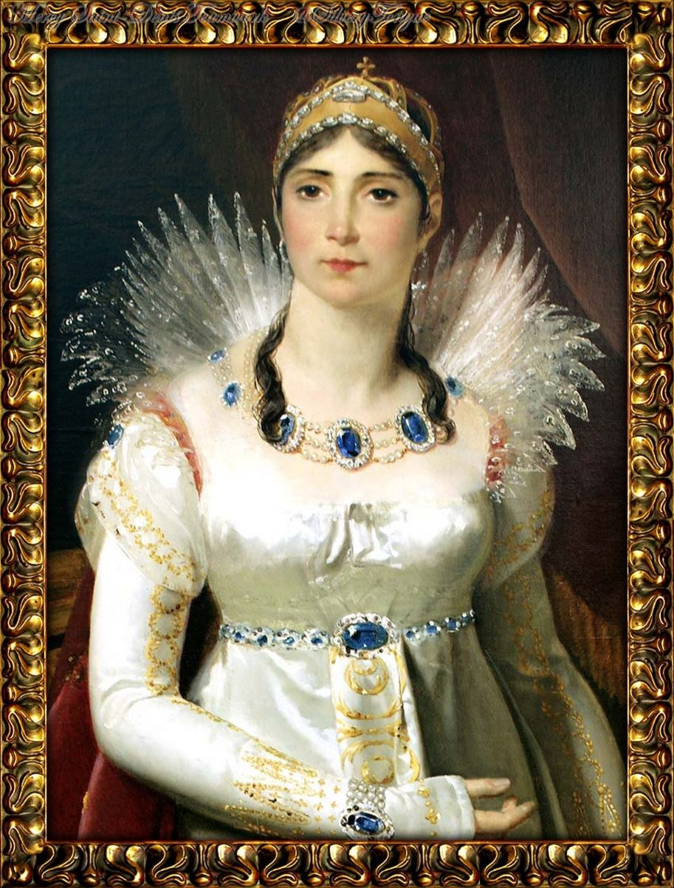

XV - JOSÉPHINE
Người ta đã viết quá nhiều, rất nhiều về cuộc tình duyên của NAPOLÉON 1 với Joséphine de Beauharnais. Bởi lẽ Napoléon là một nhân vật kỳ tài của Lịch sử, một bậc vĩ nhân không những của nước Pháp mà của cả thế giới, có thể so sánh với các vị Hoàng đế lớn nhất của La mã và Hy lạp thời xưa: César, Alexandre. Lẽ thứ hai, cuộc đời của Joséphin, từ lúc còn là một quả phụ nghèo, bị nợ nần, bị khinh khi của một viên Tử tước bị tòa án cách mạng xử chém, cho đến khi kết hôn gượng gạo với Đại tướng Napoléon Bonaparte, rồi được tôn lên làm Hoàng hậu oai nghi nhất của nước Pháp, sau cùng bị Hoàng đế li dị. Cả cuộc đời sôi nổi của bà được toàn thể các quốc gia Âu châu theo dõi từng giờ, từng phút, như một vì sao sáng rực trên vòm trời Tây phương, bên cạnh ngôi sao chói lọi Napoléon, đầu thế kỷ XIX.

Tựu chung, nhiều nhà sử học Âu Mỹ đã tiểu thuyết hóa cuộc tình duyên ấy, kéo dài 13 năm, từ 1796 đến 1809, thêu dệt nhiều câu chuyện quá nên thơ, không đúng với thực tế.
Joséphine là một cô đầm lai da đen ở Martinique, một hòn đảo thuộc địa của Pháp trên biển Antilles, cùng một dãy với đảo Cuba. Nhờ máu lai đó mà nàng được một sắc đẹp mơ màng duyên dáng lạ. Nhiều sử sách thuật lại rằng lúc còn nhỏ ở với mẹ trên đảo, một hôm có một mụ phù thủy da đen xem tướng con bé đầm lai, bảo nó; “ Mày lớn lên sẽ làm Hoàng hậu”. Chính Joséphine cũng có lần kể câu chuyện này cho Napoléon nghe.
Sang Pháp bị ép gả cho Thiếu tướng Tử tước De Beauharnais nàng sinh được một trai, Eugène, và một gái Hortense. Gặp phong trào cách mạng Pháp nổi dậy làm đảo lộn hệ thống chính trị và xã hội lúc bấy giờ, chồng nàng bị lên đoạn đầu đài, nàng cũng bị giam trong tù một thời gian.
Sau khi được tha, nàng giao thiệp thân mật với các bà vợ của các vị lãnh tụ cách mạng Pháp, nhất là bà Tallienen.
Nơi biệt thự bà này, lần đầu tiên Bonaparte được giới thiệu với quả phụ Joséphine. Chàng mới có 26 tuổi, đóng lon Trung tướng, Nàng 34 tuổi, đã nổi danh là người đàn bà đẹp nhất ở Paris.
Bonaparte tuy đã nổi tiếng là vị anh hùng dũng cảm, nhưng nghèo mạt. Người thì lùn, lại gầy yếu, tóc xõa xuống đến vai, chàng mặc bộ quân phục bị rách vá đôi nơi, tay cầm cái mũ cũ mà chàng còn giữ mãi từ hồi chàng thắng trận oanh liệt chống quân Anh trên hải cảng Toulon. Da mặt vàng khè càng làm cho xấu xí thêm gương mặt lưỡi cày, lộ ra hai quai hàm vuông. Chỉ có cặp mắt xám xanh là có mãnh lực lạ thường: ông nổi giận ai thì nó lóe ánh sáng ra, ông nhìn ai thì nó đâm vào tròng con ngươi của người ta. Lần đầu tiên ông ngó Joséphine: bà qủa phụ hoa khôi của Paris lớn hơn ông 8 tuổi mà tự nhiên cảm thấy mình bẽn lẽn, sợ sệt như cô gái 13.
Joséphine lúc bấy giờ lại là người yêu của Barras, một lãnh tụ có uy tín nhất của chánh phủ cách mạng. Một hôm Tallien, Chủ tịch Hội đồng Pháp ước (Convention), mở tiệc long trọng, Bonaparte tới dự tiệc với bộ nhung phục cũ mặc mỗi ngày, giữa đám đông quan khách áo quần rực rỡ xa hoa. Chàng trung tướng trẻ tuổi đến gần Tallien phu nhân, mỉm cười với bà:
- Nhờ bà bảo Bộ Chiến tranh phải cho tôi mấy thước nỉ mới để tôi may một bộ đồ.
Bà Tallien cười, hứa sẽ vận động với Bộ Chiến tranh. Vừa lúc bà Joséphine đi ngang qua, nghe câu chuyện, đứng lại hỏi Bonaparte:
- Thưa Trung tướng, mấy bà bạn của tôi khen trung tướng xem chỉ tay, bói vận mạng hay lắm, có đúng thế không ạ?
Bonaparte cười:
- Đúng.
Joséphine chìa tay ra nhờ Bonaparte coi dùm. Bonaparte nắm mấy ngón tay của bà, xem qua rồi nói quả quyết:
- Bà là ngôi sao đang lên giữa vòm trời.
Joséphine thích trí, cười ngặt nghẽo:
- Một bà phù thủy đã bảo tôi sẽ làm Hoàng hậu…
- Bà sẽ là Hoàng hậu.
- Nếu tôi là Hoàng hậu, ai sẽ là Hoàng đế?
Vị trung tướng áo vá liền nghiêm trang, trả lời:
- Nước Pháp …….
Mất chữ………..
Phóng tác:
( - Nước Pháp sẽ có Hoàng đế mới!

Đôi mắt của Napoleon phóng tia nhìn đắm đuối và cuốn hút tới Josephine, nàng cảm thấy rất thỏa mãn.
Lúc bấy giờ Josephine đang là tình nhân của Barras, thủ lĩnh của cách mạng Pháp. Tuy nhiên ông này đã không còn mặn nồng với nàng nữa và đang tìm cách rút chân ra khỏi mối tình với quả phụ này một cách êm ả.
Napoleon tìm kiếm mọi cách để có chiến công và thăng chức. Sau một thời gian, quan hệ giữa ông và Josephine thân mật hơn,ông cũng biết rõ quan hệ của nàng với Barras, Napoleon muốn qua nàng truyền tới tai Barras là muốn được sang Ý chiến đấu với tư cách là Tư lệnh Bộ đội Viễn chinh.
Quả thật, Barras cũng nhìn thấy sự say mê của Bonaparte với Josephine, và ông muốn nàng nhận lời làm hôn thú với….
nhận lời làm hôn thú với Bonaparte. Joséphine tính toán lợi hại, rồi đề nghị với Barras:
- Nếu anh cho Bonaparte làm Tư lệnh bộ đội viễn chinh Ý, như Bonaparte đã ngỏ lời cầu xin anh, thì em sẽ bằng lòng.
- Được rồi, em bằng lòng lấy Bonaparte, thì anh ký sắc lệnh cho Bonaparte là Tư lệnh Bộ đội Viễn chinh Ý.
Đám cưới được tổ chức vội vàng, và làm thỏa mãn cả ba người: Barras được dứt bỏ Joséphine mà chàng đã chán ghét, Bonaparte được một người vợ đẹp nhất thủ đô, Joséphine được người chồng mới, cung cấp tiền bạc để trả nợ và tiêu xài phủ phê.
Hôn lễ định cử hành ngày 9-3-1796, hồi 9 giờ đêm. Vì sáng sớm hôm sau, Bonaparte phải đem quân đi đánh trận, với tư cách Tư lệnh Bộ đội Viễn chinh Ý.
Hôn lễ cũng thật là buồn cười, quái gở. Trong phòng khánh tiết của Quận nhì, liu hiu vài ngọn đèn dầu ( lúc bấy giờ chưa có đèn điện). Joséphine với hai người chứng. Tallien và Barras, ngồi chờ Bonaparte từ lúc 9 giờ. Mãi quá 10 giờ chàng mới tới. Chàng nói vài lời xin lỗi người yêu, rồi đi thẳng đến viên xã trưởng Leclerc, vỗ vai y, bảo:
- Nhanh lên, ông xã! Cho hai đứa tôi cưới mau lên!
Xã trưởng vội đọc các điều luật hôn phối và tên họ cùng ngày sinh tháng đẻ của người chồng và người vợ. Barras và Tallien mỉm cười nghe tờ đọc khai sinh của Joséphine rút bớt 5 tuổi còn 29 tuổi, và khai sinh của Bonaparte làm tăng thêm 6 tuổi thành 32 tuổi.
Sự thực thì Joséphine 34 tuổi, Bonaparte 26.
Cưới xong, 10 giờ 30, Bonaparte đưa Joséphine về biệt thự của nàng, ở đường Chanterene. 5 gời sáng hôm sau, chàng kéo đại đội binh mã tiến vào miền nam để vượt qua Ý. Có điện tín cấp báo cho vị Tư lệnh hay rằng đại quân hai nước Autriche và Piemont sắp sửa tấn công vào biên giới miền nam.
JOSEPHINE, NGƯỜI VỢ PHẢN BỘI
Sách Tàu có câu: “ Nhi nữ tình trường, anh hùng khí đoản”, tình người con gái càng dài, chí khí kẻ anh hùng càng ngắn. Câu này không đúng với trường hợp Bonaparte và Joséphine một tý nào. Bonaparte sang Ý, chiến thắng nhiều trận liên tiếp, nhiều trận oanh liệt, nhờ đó uy danh của nước Pháp cách mạng và uy danh riêng của Napoléon được vang lừng khắp cả châu Âu. Đại tướng Bonaparte được chính phủ và nhân dân Pháp nhiệt liệt hoan hô, trọng vọng và tôn sùng. Ấy thế mà ở Paris, xa chồng Joséphine chỉ lo ăn chơi xa xỉ và ngoại tình…lung tung. Bonaparte ở bên Ý cứ tưởng là ở nhà Joséphine yêu nhớ mình, chờ đợi mình, hãnh diện vì mình.
Sự thật hoàn toàn trái hẳn. Mỉa mai đau đớn thay! Trong lúc Bonaparte kéo một đại đội dân quân cách mạng Pháp, chân không mang giày, bụng không có bánh, chỉ nhờ tài thao lược của ông mà đánh tan tành được quân Sardes, quân Autrichiens, và ào ạt kéo vào thành phố Milan giữa hai hàng rào dân chúng hoan hô dây trời dậy đất, tôn sùng Bonaparte là bậc cứu tinh của nước Ý, thì ở Paris, Joséphine ngủ với người đàn ông này chán rồi lại ngủ với người đàn ông khác, chẳng tưởng nhớ gì đến chồng cả.
Giữa làn chiến thắng đang đưa ông lên cao trên mấy bực vinh quang, ông vẫn thất vọng, âm thầm đau khổ. Ông gửi liên tiếp hết lá thư này đến lá thư khác, cầu xin Joséphine một chút tình yêu, đợi Joséphine một lời thương nhớ tha thiết, kêu gọi Joséphine đến với ông, nhưng ông chờ mãi cũng không có một câu trả lời. Joséphine chỉ lợi dụng danh vọng của Bonaparte để hãnh diện với bọn tướng tá ở Paris, để tận hưởng những cuộc vui ích kỷ về vật chất, về xác thịt với chính những sĩ quan do chồng phái cấp tốc về Paris để đem thư và quà tặng về cho nàng. Nàng ngoại tình với Murat, với cả tên trung úy Hippolyte Charled một kẻ hầu cận của Bonaparte. Khi ông kêu gọi nàng sang Ý, nàng không sang, viện cớ là:ốm, là mệt, là có thai. Nhưng sự thực, Joséphine không có thai, không mệt, không ốm. Bonaparte cứ tin lời vợ, viết thư rất cảm động về hỏi thăm vợ:
“ Em đau ư? Được tin em đau, đêm ngày anh lo lắng, ăn không ngon, ngủ không yên, anh chẳng thiết gì nữa ca. Ôi! Tổ quốc mà chi! Ôi danh vọng mà chi! Chẳng có tình yêu của em thì chẳng có gì nữa cả!
“ Vợ yêu quý, đáng tôn thờ của anh ơi! Sao anh nặng tình với em thế! Anh chờ thư em, anh mong lá thư yêu dấu của hoàng hậu của lòng anh! Nếu không vì Tổ quốc, không vì nhiệm vụ, thì anh đã bỏ tất cả để chạy về Paris, để quỳ bên chân em, hôn bàn chân em!...”
Joséphine xem thư, cười xòa:
- Cái anh chàng Bonaparte này thật là lố bịch!
Ở Ý, Bonaparte thắng hết trận này đến trận khác: Castiglione, arcole, Rivoli…lien tiếp thu hoạch những chiến thắng vẻ vang làm rung động cả châu Âu. Viên đại tướng trẻ tuổi phất lá cờ cách mạng rực rỡ ba màu hiên ngang dưới vòm trời Italie. Nhưng sau mỗi cuộc hành quân, say sưa oanh liệt, có ai ngờ Bonaparte ngồi một mình trong trại, viết những dòng thư não nùng cho vợ:
“ Sao em có thể quên được kẻ yêu em nồng nàn tha thiết thế hả em? Ba ngày không có thư em, sự xa vắng em là một đau khổ vô biên…
“ Xa em anh không sống được, em ơi! Hạnh phúc của anh là ở gần Josephine…
Nhưng bao nhiêu thư đi mà không có thư về. Sau cùng, Bonaparte dọa nếu Joséphine không sang Ý với ông, Ông sẽ bỏ rơi quân đội, bỏ rơi chiến thắng để trở về Paris. Hoảng hốt, Barras, chủ tịch chính phủ phải mời Joséphine đến để năn nỉ bà đi thăm chồng, và Joseph Bonapartre cũng rầy la người em dâu, bắt buộc nàng phải lên đường tức khắc.
Joséphine gượng gạo ra đi, nhưng “đã quen mất nết đi rồi”. Nàng vẫn không quên dẫn theo trung úy Hippolyte Charles, kè kè bên cạnh, người tình nhân đã cùng nàng chăn gối trong những ngày vắng đức lang quân. Thế mà khi nàng đến Milan, Bonaparte reo mừng đón tiếp nàng, quên hết cả buồn phiền, hết cả ghen tuông, đưa nàng đến ngự trị trong lâu đài Serbelloni. Chàng vui mừng sung sướng, ôm lấy nàng, hôn lấy hôn để, nâng niu âu yếm, rồi nghĩ đến nhiệm vụ đối với Tổ quốc, chàng lại để nàng đó lên ngựa chạy ra chiến trường chỉ huy chiến cuộc.
Được ít lâu, Joséphine lại trở về Parris. Bonaparte lại nhớ nhung viết thư liên tiếp hàng ngày và hàng ngày lại mong chờ tin nhạn. Nàng vẫn thờ ơ, lãnh đạm, thỉnh thoảng mới trả lời một vài dòng.
Bonaparte luôn luôn với giọng hiền lành, nỉ non oán trách:
“Em tệ lắm, nỡ lòng nào phản bội một người chồng khốn khổ, một người yêu tha thiết. Nếu không có Josephine yêu quý của anh, nếu anh không tin chắc rằng em yêu anh thì trên trái đất này anh còn gì nữa đâu? Thì anh sẽ làm sao?”
Và cuối thư Bonaparte có một câu tuyệt đẹp sau:
“Thôi chào em Joséphine yêu quý! Một đêm gần đây, anh sẽ rầm rộ xô cửa vào phòng em như một người ghen, thế rồi anh sẽ nằm trong hai cánh tay của em.”
( Adieu, adorable Joséphine! Une de ces nuits, lés portes s’ouvriront avec fracas, comme un jaloux, et me voilà dans tes bras)
Quá yêu vợ, và đau khổ vì bị vợ phản bội, nhưng Napoléon Bonaparte không phải là một người đàn ông bi lụy vì đàn bà. Chiến thắng anh dũng ở Italie (1797), Bonaparte lập nước cộng hòa đầu tiên ở Ý rồi trở về Pháp, được chính phủ cách mạng giao phó một nhiệm vụ mới vẻ vang hơn nữa. Vì ngoài Bonaparte không còn vị tướng lành nào đảm đương nổi: cuộc viễn chinh sang Egypte (Ai cập) 26-5-1798 để đánh lại kẻ thù duy nhất là Anh quốc. Napoléon từ giã vợ ra đi cầm đầu một đạo quân 36.000 người đã lừng danh là đạo quân hùng dũng nhất ở châu Âu. Ông còn đem theo một phái đoàn văn hóa gồm các nhà Văn sĩ, Thi sĩ, Khoa học, với mục đích là đem Văn hóa Pháp đi truyền bá xứ người.
Ở Egypte, Bonaparte cũng chiến thắng oanh liệt như ở Italie. Ông đánh tan tác các đạo quân của Anh, của Egypte, của Turquie, làm bá chủ Địa Trung hải, và rung động cả một vùng Tiểu Á.
Nhưng ông cũng được tin tức từ bên Pháp gửi sang cho biết là Joséphine ở Paris vẫn ham chơi bời, xài phí xa hoa, và gần như công khai ăn ở với viên trung úy Charles Hippolyte.
Napoléon Bonaparte giận giữ lắm. Xong nhiệm vụ ông trở về Paris, quyết định ly dị vợ. Được tin Bonaparte hồi hương, Joséphine hoảng hốt, cảm thấy rõ lần này người chồng quá hiền lành âu yếm kia sẽ không còn tha thứ những tội lỗi của nàng được nữa.
Joséphine vội vàng từ bỏ tình nhân để đi đón chồng. nàng muốn gặp Bonaparte trước khi ông về tới Paris, và sẽ dùng các lời nói yêu thương tha thiết, các cử chỉ nũng nịu, dịu dàng để mong chàng yêu thương trở lại.
Nhưng rủi ro cho nàng, nàng đi đón chồng trên đường Bourgogne trong lúc Bonaparte về ngả Bourbonnais, Joséphine đến thành phố Lyon mới biết là mình đã đi lộn đường.
Bonaparte về tới Paris ba ngày rồi mà Joséphine còn lạc lối ở các tỉnh miền nam, chưa trở về kịp. Trong lúc Bonaparte hầm hầm tức giận và nhất định khi gặp Joséphine ông sẽ gây một trận lôi đình rồi xé bỏ hôn thú, không thèm nhìn mặt con mẹ đàng điếm ấy nữa, thì ba cô em gái của ông và cả gia đình ông lại mách với ông tất cả những việc làm xấu xa bỉ ổi của Joséphine trong lúc vắng ông. Bonaparte không còn nghi ngờ gì nữa về những tội lỗi tày đình của người vợ tệ lậu, vô liêm sỉ, và quyết định đuổi bà ra khỏi nhà. Ông đã truyền lệnh lấy tất cả áo xống và đồ đạc của bà, vứt bỏ nơi nhà người gác dan.
Nghe tiếng Joséphine về đến cổng, và sắp vào nhà, ông đóng cửa, không tiếp vợ. Josephine sợ xanh mặt kêu khóc thảm thiết, và năn nỉ ông tha lỗi. Nhưng Bonaparte nhất định không mở cửa. bà phải chạy đi gọi cô con gái của bà là Hortense và người con trai là Eugène, đến van xin, Bonaparte tuy là cha dượng, nhưng vẫn thương hai người này.
Thấy cả ba người kêu xin, ông đông lòng thương xót, liền mơ cửa cho ba mẹ con vào. Joséphine quỳ xuống chân ông, khóc lóc, tỏ vẻ hối hận, và xin chịu tội.
Bonaparte tha thứ ngay. Và từ hôm ấy Joséphine mới hoàn toàn hối cải, đem hết lòng kính yêu chồng, giữ một dạ trung thành với Napoleon cho đến chết.
Ngày 9 tháng 11 năm 1799, Bonaparte gây cuộc đảo chính, lên nắm chính quyền, thì chính Joséphine đã hăng hái giúp một phần trong sự thành công của ông, nhờ những cuộc vận động khôn khéo của bà trong các chính giới. Ngày 18 tháng 5 năm 1804, Napoléon được dân chúng tôn lên ngôi Hoàng đế. Ông không ngần ngại phong cho bà chức Hoàng hậu của nước Phap
HOÀNG HẬU KHÔNG CÓ…
MẤT CHỮ
…….được ngài đặt lên ngôi vua Hoà lan, và nhờ đó mà Hortense được làm Hoàng hậu xứ Hòa lan. Con trai của Joséphine là Eugène de Beauharnais cũng được Napoléon cho làm vua nước Italie. Cũng như tất cả các anh em trai và ba cô em gái của Napoléon đều được ngài cho làm vua rải rác khắp các ngai vàng ở Tây Âu, và triều đại Napoléon là một biến cố vẻ vang nhất của Lịch sử nước Pháp và Lịch sử Tây phương.
Nhưng Napoléon cần có một hoàng nam để nối dõi mà Joséphine đã uống đủ các thứ thuốc và nhờ các vị lương y danh tiếng nhất của Âu châu điều trị, bà vẫn không có thai, và không hy vọng sinh một hoàng tử kế nghiệp Napoléon. Lúc đầu bà còn đổ thừa cho chồng vì chính bà lấy đời chồng trước đã sinh được hai người con, một trai một gái. Hoàng đế thấy Joséphine nói cũng đúng và tự thấy ngờ vực khả năng sinh sản của mình.Tức giận, ông muốn thử nghiệm với một người đàn bà khác, để xem lỗi thuộc về ai. Một hôm, sau khi Napoléon thắng trận Austerliz trở về kinh đô, Hoàng hậu Caroline, em gái của ông, vợ của Murat, vua xứ Naples, và là người thù ghét Joséphine hơn ai hết, Giới thiệu với Hoàng đế một cô gái 18 tuổi, hầu cận của bà, trong một buổi tiệc. Cô gái tên Eléonore Danuelle, được Hoàng hậu Caroline truyền vào cung để đọc sách cho bà nghe. Khỏi nói, ai cũng biết rằng Eléonore có sắc đẹp vô cùng quyến rũ, và còn trinh tiết, tính nết thuần hậu. Trông thấy Eléonore, Napoléon ưa ngay, và truyền lệnh đưa nàng vào cung điện của ngài. Tháng sau nàng có thai, và tháng 12 năm 1806, nàng sinh được một đứa con trai giống Napoléon như đúc. Napoléon liền bảo với Joséphine:
- Em thấy không, Anh lấy Eléonore có con đấy. Em còn đổ lỗi cho anh nữa thôi?
Từ đấy Joséphine hết sức buồn rầu chỉ lo sợ Napoléon bỏ rơi mình để tôn người khác lên ngôi Hoàng hậu.
Khi Eléonore sinh con trai, quan hầu cận hỏi Hoàng đế đặt tên hòang nam là gì. Napoléon không do dự bảo:
- Lấy một nửa cái tên của Trẫm đặt tên cho con Trẫm.
Thế là người con trai đầu lòng của Napoléon được mang tên Léon…
Napoléon rất buồn phiền vì nỗi không có con trai chính thức để nối dòng. Tuy bây giờ Joséphine đã ăn năn hoàn toàn, và rất yêu chồng, tôn thờ ông, chiều chuộng ông đủ các cách, ông vẫn buồn rầu vì bà đã lớn tuổi rồi, không sinh sản được nữa. Napoléon vẫn tha thiết yêu quý vợ như trước, nhưng trái ngược lại với mấy năm trước trong lúc Joséphine đã trở thành triệt để thủy chung với chồng, giữ đúng đắn địa vị một Hoàng hậu của nước Pháp “mẫu nghi thiên hạ” thì Napoléon lại “mèo chuột” lung tung. Đây là thời kỳ Hoàng đế đem gieo vãi tình yêu khắp các bà các cô nổi tiếng là đẹp nhất ở Paris: bà Fourès, bà Grassini, cô George, bà de Vaudey, bà Duchâtel, bà Gazzini, cô Guillebeau, cô Danuelle...
Bất ngờ cô Danuelle có thai với Hoàng đế, sinh con trai và được đặt tên Léon. Joséphine liền mưu mô vận động để chồng nhìn nhận Léon là Hoàng tử chính thức. Mưu mô như thế vì bà nghĩ rằng nếu Napoléon có con chính thức rồi thì không nghĩ đến việc ly dị bà để cưới người vợ khác. Bề nào cô Danuelle, vì địa vị thấp kém cũng không thể lên ngôi Hoàng hậu được, thì tất nhiên ngôi Hoàng hậu của bà sẽ còn vững chãi.
Napoléon suýt nghe lời Joséphine và đã có ý định nhìn nhận, nhưng những người thân cận nhất của ông là Murat và Duroc can gián ông: “ Làm như thế sẽ mất uy tín của Hoàng đế”. Napoléon bỏ ngay ý định và đặt lại vấn đề ly dị Joséphine để cưới một người vợ khác, tôn làm Hoàng hậu.
Người vợ khác là ai? Cả châu Âu đều tưởng rằng có lẽ là nữ Bá tước Marie Walewska sẽ thay thế Joséphine.
Trong chương sau, tôi sẽ nói rõ về cuộc tình duyên lý thú của Napoléon và mỹ nhân này, người xứ Ba lan.
Đây chỉ xin nói tắt rằng trong lúc Napoléon có ý định ly dị Joséphine thì trong một trường hợp ly kỳ, ông gặp nữ Bá tước Marie Walewska…
NGƯỜI CON TRAI NGOẠI HÔN THỨ NHÌ CỦA NAPOLÉON
Cuộc gặp gỡ này ngẫu nhiên thành một biến cố quan trọng trong Lịch sử nước Pháp và châu Âu, và riêng trong Lịch sử của Hoàng đế Napoléon: do đó mà Napoléon quyết định ly dị Joséphine để tái hôn với người vợ khác.
Napoléon đem binh sang đánh nước Đức, và kéo đoàn quân thắng trận vào Kinh đô Varsovie của xứ Poland (Balan). Lúc bấy giờ xứ này đang bị ba vị Hoàng đế của ba cường quốc Trung Âu: Đức, Nga, Autriche chia xẻ tan tành và chiếm cứ mỗi người một khu vực. Nghe tin Napoléon thắng trận và kéo quân vào Varsovie, một thiếu phụ ái quốc của Poland liền chạy ra đường đón vị Hoàng đế anh hùng của Pháp quốc để cầu cứu, nhờ ông bắt buộc ba cường quốc xâm lăng kia trao trả Ba lan cho dân tộc Balan. Thiếu phụ ấy tên là Marie Walewska, nữ bá tước Ba lan
Nàng đẹp vô ngần. Nhan sắc trẻ trung và duyên dáng của nàng quyến rũ tức khắ vị Hoàng đế nước Pháp. Chính phủ vong quốc Ba Lan thấy thế liền khuyên nữ bá tước hy sinh tấm thân trong ngọc trắng ngà của nàng cho Napoléon để mong được giải phóng quê hương. Marie Walewska bằng lòng hiến thân cho vị anh hùng đang làm chúa tể châu Âu, để cứu Tổ quốc. Nàng liền ly dị chồng là bá tước Colonna Walewska, một nhà tỷ phú đại kinh doanh nhưng già cả, bệnh hoạn, bên cạnh ông này nàng đã sống cuộc đời buồn phiền, vô vị.
Lúc đầu Napoléon coi Marie Walewska chẳng qua như món đỗ chơi quí giá của xứ Ba Lan cống tận tay ông thế thôi. Và bậc Mỹ nhân ái quốc kia lúc đầu cũng chỉ coi Hoàng đế nước Pháp như một kẻ bạo chúa mà nàng phải ngậm hờn nuốt nhục, hiến thân hòng xin cho tổ quốc của nàng được thu hồi độc lập. Không dè chàng mê vì sắc, nàng phục vì tài, trai anh hùng gái thuyền quyên đã lưu luyến cùng nhau trong giờ tao ngộ. Nàng có thai, rồi ở luôn bên cạnh chàng. Napoléon giữ lời hứa, nhưng một phần nào thôi, ông đã bắt buộc hoàng đế nước Đức trả lại một phần đất Ba Lan, hoàng đế nước Nga cũng phải trả lại một phần. Ông lập thành vương quốc Varsovie, khởi điểm của quốc gia Ba Lan, trao cho Thống chế Poniatowski của Ba Lan làm tổng tư lệnh
Nữ Bá tước Marie Walewska sinh cho napoleon một cậu con trai. Đứa con ngoại hôn thứ hai này ra đời càng khiến Napoléon cương quyết ly dị Joséphine. Bây giờ ông biết chắc chắn rằng ông có hoàng tử để nối ngôi, và ông phải từ bỏ Joséphine vì lý do chính trị.
Tháng 11 năm 1809, ông trở về Paris nói cho Joséphine biết rõ quyết định của ông. Joséphine khóc lóc, van xin, kêu gào lòng thương xót của ông, nhưng ông bảo:
- Chính trị không có trái tim, chỉ có đầu óc mà thôi. ( La politique n’a pas de Coeur, elle n’a que de la tête).
Napoléon cũng thấy rằng vợ chồng ăn ở với nhau đã 13 năm, nàng vẫn yêu kính ông, chiều chuộng ông, hoàn toàn là một người vợ hiền lành, kiểu mẫu, bây giờ xa cách bà thật là một việc xót xa luyến tiếc trong lòng ông. Nhưng việc quốc gia đại sự, cả tương lai của triều đại Napoléon, mà ông đã xây dựng, cả chiếc ngai vàng mà ông đã chiếm được, cả lịch sử của nước Pháp đã giao phó trong tay ông, đều nặng hơn tình nghĩa phu thê.
Joséphine đứt từng khúc ruột khi nghe Napoléon thuyết phục bà phải hy sinh ngôi hoàng hậu. Và dù thế nào bà cũng không thể nào chống cự được ý định của Hoàng đế, bà phải chịu vậy…
Thế là cuộc ly dị Joséphine được loan truyền cho dân chúng rõ.
VẪN GIỮ CHỨC HOÀNG HẬU
Đúng 9 giờ tối ngày 15-12-1809, nghi lễ ly dị được khởi hành trong cung điện Hoàng đế, trước mặt đông đủ tất cả hoàng tộc, và toàn thể nhân viên cao cấp, văn võ bá quan cùng các vua chư hầu khắp nơi được triệu về.
Đồng hồ treo trên tường vừa điểm chín tiếng. Cửa chính điện từ từ mở hai cánh rộng ra…
Hoàng thái hậu đi trước, rồi đến các Vua và các Hoàng hậu trong các Hoàng gia: Louis, Jerôme, Murat, Eugène, Julie, Hortense, Catherine, Pauline, Caroline, kẻ trước người sau, theo thứ tự nghi lễ, thong thả bước vào. Napoléon và Joséphine đón chào. Napoléon ra dấu cho mọi người an tọa. Hoàng hậu Joséphine mặc áo trắng, không đeo một món nữ trang nào, trừ một rẻo ruban quấn trên mái tóc. Gương mặt bà xanh rờn vì cảm xúc mạnh, nhưng bà cố giữ nét bình tĩnh. Hoàng đế Napoléon mặc nhung phục Đại tá Ngự lâm quân, đôi mắt ngài u uất, nhìn đăm đăm khoảng không, như trầm ngâm nghĩ ngợi.
Bỗng ngài đứng dậy, lấy một tờ giấy đọc bằng một giọng dịu dàng và thanh thoát. Cả cung điện đều im lặng nghe tiếng ngài tuyên bố vang lên như sau:
- Trẫm đã mất hết hy vọng có con với Hoàng hậu Joséphine. Vì thế, trẫm phải hy sinh tình yêu thương tha thiết của trái tim và chỉ nghe tiếng gọi của quyền lợi quốc gia. Chúa chứng minh cho lòng đau đớn xót xa của Trẫm khi phải quyết định việc này. Nhưng không có một hy sinh nào mà trẫm không có can đảm chịu đựng một khi sự hy sinh ấy có lợi cho nước Pháp…Trẫm rất khen ngợi lòng luyến ái dịu hiền của người vợ yêu quý của Trẫm. Trẫm muốn nàng cứ giữ chức vị Hoàng hậu, nhất là nàng đừng bao giờ nghi ngờ cảm tình chân thật của Trẫm, và luôn coi Trẫm như người bạn tốt nhất và thân yêu nhất của nàng vậy.
Napoléon ngồi xuống. Đén lượt Joséphine dứng dậy, đọc những lời tuyên bố rất văn hoa, đẹp đẽ do tự tay bà viết:
-“ Thiếp xin phép đấng Phu quân uy nghiêm và thân ái của thiếp cho thiếp được tuyên bố rằng, vì thiếp không còn hy vọng sinh con cho Hoàng đế để phụng sự những nhu cầu chính trị của Ngài và quyền lợi của nước Pháp nên thiếp xin vui lòng chứng tỏ với Hoàng đế tấm lòng tận tụy trung thành và luyến ái của thiếp…
Vừa đọc đến đây, Joséphine nghẹn ngào, té xỉu xuống ghế. Quan cận vệ Regnault d’Angeli phải lấy tờ giấy cầm đọc tiếp:
- Thiếp đã nhờ rất nhiều tấm lòng quảng đại yêu thương cảu Hoàng đế. Ngài đã tôn thiếp lên ngôi Hoàng hậu, và trên ngai vàng cao vút kia thiếp luôn luôn được nhân dân Pháp tỏ lòng hân hoan ưu ái…Sự thủ tiêu hôn thú hôm nay sẽ không thay đổi chút nào những tình cảm chứa chan trong lòng thiếp. Thiếp sẽ luôn luôn là người bạn thân yêu của Hoàng đế. Ngài và Thiếp, chúng ta đều vẻ vang với sự hy sinh mà chúng ta đã chịu đựng vì quyền lợi tối cao của Tổ quốc và nhân dân”.
Vị cận vệ vừa đọc xong, Napoléon bước tới Joséphine và xúc động xiết tay bà. Giây phút vô cùng cảm động. Người ta thấy Hoàng thái hậu, mẹ của Napoléon, chùi một ngấn lệ. Hai cô em gái khó tính nhất của Napoléon, thù ghét Joséphine nhiều nhất, là hai Hoàng hậu Pauline và Caroline cũng rưng rưng nước mắt, Hoàng hậu Hortense con gái riêng của Joséphine đưa hai tay che mặt òa khóc lên.
Vị bộ trưởng Combacérès lập biên bản buổi lễ ly dị. Napoléon hạ bút ký liền, Joséphine ký tên bà ngay dưới tên ông.
Đến lượt bà Hoàng thái hậu ký run run, rồi đến lượt Vua và các hoàng hậu khác của triều đại Napoléon…
Joséphine từ giã để về cung, nhưng được mấy bước thì bà té xỉu xuống cầu thang. Người ta đã ôm xốc bà lên đưa bà về.
Tuy bị ly dị nhưng Joséphine vẫn được Napoléon ban cho ba lâu đài nguy nga, tiền lương mỗi năm ba triệu đồng và ông trả hết tất cả những món nợ phung phí của bà cũng lên đến mấy triệu. Ngoài ra ông vẫn để bà giữ chức vị Hoàng hậu…hưu trí.
Sau nhiều năm ẩn dật ở biệt điện Malmaison, Joséphine sống cuộc đời yên tĩnh nhưng không thiếu xa hoa lộng lẫy, được dân chúng Pháp kính phục và các vua chúa trên thế giới cũng quý mến như xưa. Ngay khi Napoléon thất thế, bị đày ra đảo Elbe, Hoàng đế Alexandre của nước Nga và vua nước Đức kéo quân vào Paris cũng đến thăm bà.
Bà bị đau phổi, tạ thế ngày 29-5-1914 tại Malmaison.